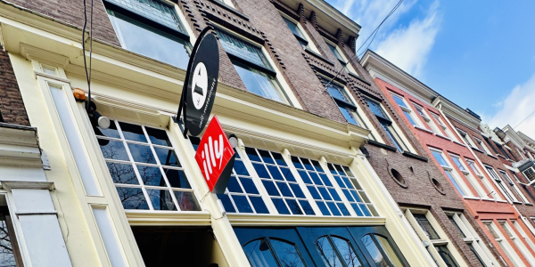

Dagschotel
13,50
Pulled pork quesadillas met guacamole, crème fraîche en maissalade

Café Restaurant aan de Voorstraat, Delft
Al 40 jaar een begrip in Delft. Voor een lekkere saté, een goed biertje of gewoon bijkletsen bij een wijntje.
Ma t/m do 16:00 – 23:00 · vr 16:00 – 01:00 · za 13:00 – 01:00 · zo 13:00 – 23:00
Stap binnen in de bruine kroeg of in onze lichte serre. Doordeweeks zijn we open vanaf 16:00 en in het weekend al vanaf 13:00.
Hier kom je om een lekkere saté te eten, een goed biertje te drinken of om gezellig bij te kletsen onder het genot van een heerlijk wijntje. Vanaf april ligt er ook een terrasboot, met een mooi uitzicht op de Delftse gracht.

Ma–vr vanaf 17:00 uur, za & zo vanaf 13:00 uur. De specials wisselen regelmatig.
13,50
Pulled pork quesadillas met guacamole, crème fraîche en maissalade
22,50
Eendenborstfilet met geroosterde aubergine crème, kersen-portjus en geroosterde schorseneren
8,50
Chocolademousse, passievruchtenschuim en rood fruit
21,50 p.p.
4 gerechtjes om samen te delen:
17,50
Elke laatste zondag van de maand.

Bij ons geen tosti's, uitsmijters of clubsandwiches, maar gewoon dezelfde kaart als 's avonds. Zaterdag en zondag zijn we vanaf 13:00 open voor lunch.
Heeft u allergieën of dieetwensen? Laat het ons weten! V = vegetarisch

Van brood met dips tot de grote borrelplank. En natuurlijk de bitterballen, ook vegan.

Bier van de tap en op fles, craft, glutenvrij en alcoholvrij, wijn, cocktails, mocktails en warme dranken. Tik een groep open.
Van een culinaire wandeling door Delft tot een avond live muziek. De avonden van de V: live muziek van 21:30 tot ongeveer 00:30.

De V biedt genoeg ruimte voor meerdere partijen en feesten, of u nu iets kleins en intiems plant of een grotere groep wilt ontvangen. Onze indeling is flexibel en we denken graag met u mee over welke ruimte het beste bij uw gezelschap past.
Onze arrangementen en menu's zijn alleen op reservering mogelijk en beschikbaar vanaf 15 personen.
Wil jij graag deel uitmaken van ons gezellige team? Solliciteer dan via info@cafe-de-v.nl of neem telefonisch contact op met 015 - 214 09 16.
Geef bij een sollicitatie via mail aan op welke functie je solliciteert en wat je motivatie is, en stuur je cv mee. Wij nemen dan zo snel mogelijk contact met je op.
Voorstraat 9
Delft
015 - 222 90 70
info@cafe-de-v.nl
| Ma t/m do | 16:00 – 23:00 |
|---|---|
| Vrijdag | 16:00 – 01:00 |
| Zaterdag | 13:00 – 01:00 |
| Zondag | 13:00 – 23:00 |
Gesloten op 24, 25 en 26 december en op 31 december en 1 januari.